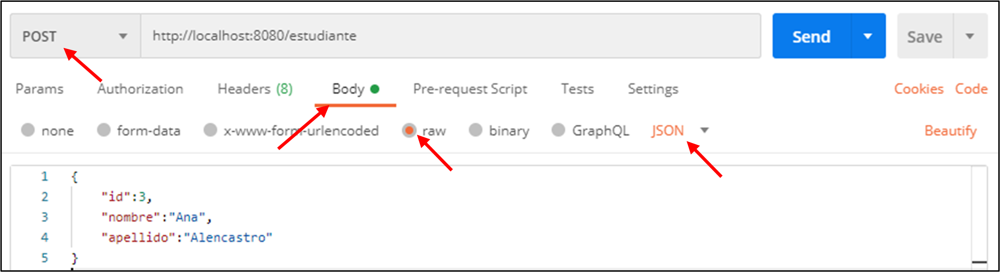
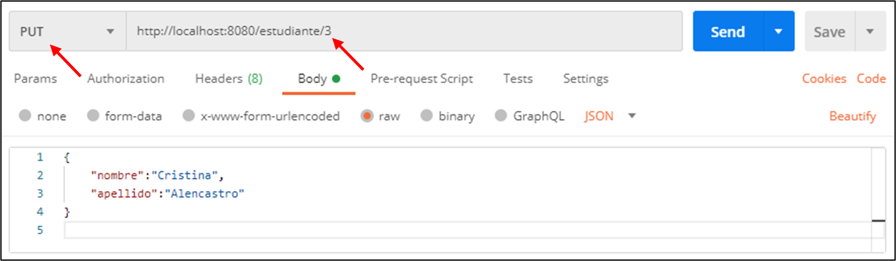
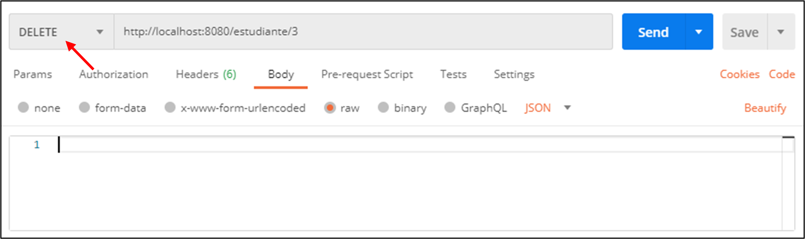
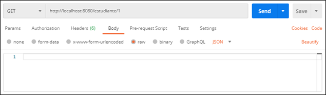

Laboratorio 5
Desarrollo de una aplicación Web (Servidor)
Objetivo:
-
Conocer la notación de objetos de JavaScript (JSON) para transmitir datos en la red.
-
Generar un servidor web mediante el framework EXPRESS para poder programar la parte lógica de una
aplicación Web.
-
Implementar API Rest para el envío y recepción de datos JSON hacia un cliente mediante peticiones HTTP de
tipo GET, POST, DELETE y PUT.
Duración:
Ciento veinte (120) minutos.
Materiales y Herramientas:
-
Un navegador web
-
Software editor de texto (Visual Studio Code)
Investigación
Pregunta 1: ¿Qué es API Rest?
Pregunta 2: Mencione y describa 5 códigos de respuestas HTTP (Ej. Código 200 - Ok)
Pregunta 3: Mencione y describa brevemente OTRO framework del lado del servidor como EXPRESS
Procedimiento
Paso 1: Implementación del servidor Web
-
Crear un archivo con el nombre index.js dentro de una carpeta laboratorio5 y programar un servidor en
el puerto 8080 y que la página de inicio muestre el nombre de la materia seguida del paralelo.
-
Instalar la herramienta Nodemon.
-
Ejecutar el servidor Web con Nodemon.
Paso 2: Creación de rutas
-
Crear una ruta adicional a la ruta de inicio, la cual sea accesible desde /estudiante.
server.get('/estudiante', (req, res) => {
res.send("<h1>Estudiante 1</h1>")
})
-
Crear dos rutas adicionales para el profesor de la práctica y de la teoría: /profesor/practica y
/profesor/teoría; en las cuales se muestre el nombre de cada profesor correspondiente.
-
Crear una ruta por defecto con el código 404
server.get('*', (req, res) => {
res.status(404).send("<h1>Error 404</h1><h2>Página no encontrada")
})
Paso 3: Implementación de variables tipo JSON
-
Crear dos variables de tipo JSON que contenga la información de los profesores de la materia.
const profTeoria = { nombre: "Msig. Adriana Collaguazo", edad: 20 };
const profPractica = { nombre: "Ing. Christopher Vaccaro", edad: 26 };
-
Modificar las funciones de las rutas del paso 2 literal B, para que no tenga el valor quemado en un
string, sino que llame a las variables creadas anteriormente.
server.get('/profesor/teoria', (req, res) => {
res.send("<h1>La profesora de la teoría es la " + profTeoria.nombre + "</h1>")
})
server.get('/profesor/practica', (req, res) => {
res.send(`<h1>El profesor de la práctica es el ${profPractica.nombre}</h1>`)
})
-
Crear la variable profesores de tipo JSON que contenga la información del literal A.
const profesores = {
teoria: profTeoria,
practica: profPractica
};
-
Crear la variable PST de tipo JSON que contenga un arreglo de estudiantes y la lista de profesores.
const PST = {
estudiantes: [
{ "id":1, nombre: "nombre1", apellido: "apellido1" },
{ "id":2, nombre: "nombre2", apellido: "apellido2" }],
profesores: profesores
}
-
Imprimir por consola el objeto PST
Paso 4: Creación de API Rest
-
Utilizar el middleware de Express para trabajar con objetos de tipo JSON desde el cliente
server.use(express.json());
El middleware se lo debe colocar al inicio del código luego de la importación de las librerías y
declaración de variables.
-
Implementar el método POST para recibir parámetros desde el cliente
server.post('/estudiante/', (req, res) => {
console.log('Petición POST recibida desde un cliente');
console.log(req.body);
res.send('Petición POST recibida al servidor');
})
-
Implementar el método PUT para modificar parámetros desde el cliente
server.put('/estudiante/:id', (req, res) => {
console.log('Petición PUT recibida desde un cliente');
console.log(`Datos de estudiante con id: ${req.params.id} recibido`);
console.log(req.params);
console.log(req.body);
res.send(`Datos de estudiante con id: ${req.params.id} recibido en el servidor`);
})
-
Implementar el método DELETE para eliminar parámetros desde el cliente
server.delete('/estudiante/:id', (req, res) => {
console.log('Petición DELETE recibida desde un cliente');
console.log(`Estudiante con id: ${req.params.id} eliminado`);
console.log(req.params);
res.send(`Estudiante con id: ${req.params.id} eliminado en el servidor`);
})
Pregunta 4: Investigue al menos dos métodos HTTP que no se han mencionado.
-
Modificar el método GET de los estudiantes para mostrar la lista de estos y crear una nueva ruta para
obtener la información de un estudiante en específico.
server.get('/estudiante', (req, res) => {
res.send(PST.estudiantes)
})
server.get('/estudiante/:id', (req, res) => {
const estudiante = PST.estudiantes.find(
(est)=>est.id == req.params.id
);
res.send(estudiante);
})
Paso 5: Peticiones HTTP
-
Instalar la aplicación POSTMAN https://www.postman.com/downloads/
-
Realizar todas las peticiones HTTP implementadas en el Paso 4.




Pregunta 5: Si se realiza una petición PUT desde POSTMAN con el id dentro del body (como en la petición POST) y
no se lo especifica en la URL ¿Recibiría respuesta satisfactoria del servidor?, ¿Por qué?
Paso 6: Creación de un archivo JSON
-
Importar el módulo 'fs' al inicio del código
-
Comentar la declaración de la variable PST y declararla de la siguiente manera:
let PST = {}
try{
const json_PST = fs.readFileSync('base.json','utf-8')
PST = JSON.parse(json_PST)
}catch(e){
PST = {
estudiantes: [],
profesores
}
fs.writeFileSync('base.json',JSON.stringify(PST),'utf-8');
}
-
Modificar el método POST de la siguiente manera para poder agregar un estudiante al archivo JSON y al
arreglo estudiantes; además de hacer las validaciones necesarias en caso de que no se reciba una de las
claves necesarias: id, nombre y apellido
server.post('/estudiante/', (req, res) => {
const {id, nombre,apellido} = req.body;
if(!id || !nombre || !apellido){
res.status(400).send("Datos incompletos {id, nombre, apellido}");
return;
}
const estudiante = {
id,
nombre,
apellido
}
console.log('Petición POST recibida desde un cliente')
console.log(estudiante)
PST.estudiantes.push(estudiante);
fs.writeFileSync('base.json',JSON.stringify(PST),'utf-8');
res.send('Petición POST recibida al servidor ')
})
Cuando se define un par clave-valor en un objeto JSON y el valor a asignar está almacenado en
una variable que tiene el mismo nombre de la clave, basta con declarar la clave sin necesidad de
especificar el valor.
const estudiante = {id,nombre,apellido}
Es equivalente a:
const estudiante = {id:id,nombre:nombre,apellido:apellido}
-
Enviar por POST los estudiantes de la lista anterior (uno por uno)
RETO
Modificar el método POST para que valide id duplicados y no los ingrese en caso de que ya esté en el arreglo;
también modificar los métodos PUT y DELETE para que actualicen y eliminen estudiantes en el arreglo y en el
archivo JSON respectivamente. Hacer las validaciones respectivas incluyendo el código de error 400 (Bad Request)